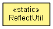

org.eclipse.net4j.util
Class ReflectUtil
java.lang.Object
 org.eclipse.net4j.util.ReflectUtil
org.eclipse.net4j.util.ReflectUtil
public final class ReflectUtil
- extends Object

|
Method Summary |
static void |
collectFields(Class<?> c,
List<Field> fields)
|
static void |
dump(Object object)
|
static void |
dump(Object object,
String prefix)
|
static void |
dump(Object object,
String prefix,
PrintStream out)
|
static Pair<Field,Object>[] |
dumpToArray(Object object)
|
static Field |
getField(Class<?> c,
String fieldName)
|
static Integer |
getHashCode(Object object)
|
static Long |
getID(Object object)
|
static String |
getLabel(Object object)
|
static Method |
getMethod(Class<?> c,
String methodName,
Class<?>... parameterTypes)
|
static String |
getPackageName(Class<? extends Object> c)
|
static String |
getPackageName(String className)
|
static String |
getSimpleClassName(Object object)
|
static String |
getSimpleClassName(String name)
|
static String |
getSimpleName(Class<? extends Object> c)
|
static Object |
getValue(Field field,
Object target)
|
static Object |
instantiate(Map<Object,Object> properties,
String namespace,
String classKey,
ClassLoader classLoader)
|
static Object |
invokeMethod(Method method,
Object target,
Object... arguments)
|
static boolean |
isSetter(Method method)
|
static boolean |
isSetterName(String name)
|
static void |
printStackTrace(PrintStream out,
StackTraceElement[] stackTrace)
|
static void |
printStackTrace(StackTraceElement[] stackTrace)
|
static void |
setValue(Field field,
Object target,
Object value)
|
static String |
toString(Object object)
|
static String |
toString(Object object,
String prefix)
|
| Methods inherited from class java.lang.Object |
clone, equals, finalize, getClass, hashCode, notify, notifyAll, toString, wait, wait, wait |
ROOT_CLASS
public static final Class<Object> ROOT_CLASS
NO_PARAMETERS
public static final Class<?>[] NO_PARAMETERS
NO_ARGUMENTS
public static final Object[] NO_ARGUMENTS
DUMP_STATICS
public static boolean DUMP_STATICS
getMethod
public static Method getMethod(Class<?> c,
String methodName,
Class<?>... parameterTypes)
invokeMethod
public static Object invokeMethod(Method method,
Object target,
Object... arguments)
getField
public static Field getField(Class<?> c,
String fieldName)
collectFields
public static void collectFields(Class<?> c,
List<Field> fields)
getValue
public static Object getValue(Field field,
Object target)
setValue
public static void setValue(Field field,
Object target,
Object value)
printStackTrace
public static void printStackTrace(PrintStream out,
StackTraceElement[] stackTrace)
printStackTrace
public static void printStackTrace(StackTraceElement[] stackTrace)
getHashCode
public static Integer getHashCode(Object object)
getID
public static Long getID(Object object)
getPackageName
public static String getPackageName(Class<? extends Object> c)
getPackageName
public static String getPackageName(String className)
getSimpleName
public static String getSimpleName(Class<? extends Object> c)
getSimpleClassName
public static String getSimpleClassName(String name)
getSimpleClassName
public static String getSimpleClassName(Object object)
getLabel
public static String getLabel(Object object)
dump
public static void dump(Object object)
dump
public static void dump(Object object,
String prefix)
dump
public static void dump(Object object,
String prefix,
PrintStream out)
dumpToArray
public static Pair<Field,Object>[] dumpToArray(Object object)
instantiate
public static Object instantiate(Map<Object,Object> properties,
String namespace,
String classKey,
ClassLoader classLoader)
throws ClassNotFoundException,
InstantiationException,
IllegalAccessException,
IllegalArgumentException,
InvocationTargetException
- Throws:
ClassNotFoundException
InstantiationException
IllegalAccessException
IllegalArgumentException
InvocationTargetException
isSetter
public static boolean isSetter(Method method)
isSetterName
public static boolean isSetterName(String name)
toString
public static String toString(Object object)
toString
public static String toString(Object object,
String prefix)
Copyright (c) 2004 - 2011 Eike Stepper (Berlin, Germany) and others.